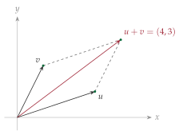
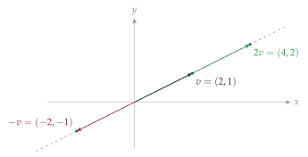
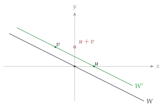
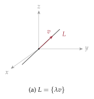
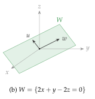

Parcial 1 · Espacios vectoriales, bases y dimensión
Para arrancarUn píxel de tu pantalla es un vector de R3 (rojo, verde, azul); una canción es un vector de R44100 por cada segundo. Hoy aprendemos qué tienen en común todos esos objetos para poder sumarlos y escalarlos sin miedo.
El álgebra lineal estudia un tipo muy particular de estructura: conjuntos cuyos elementos se pueden sumar entre sí y multiplicar por números sin salir del conjunto, y de tal manera que esas dos operaciones se comporten como lo hacen las flechas del plano. Los ejemplos que uno tiene en mente primero son las n-tuplas de números reales; pero las matrices, los polinomios y las funciones tienen exactamente las mismas propiedades operatorias, y todo lo que se pruebe usando solo esas propiedades valdrá para todos ellos a la vez. Ese es el propósito de este capítulo: pasar de la intuición geométrica de los vectores del plano y del espacio a la definición abstracta de espacio vectorial, deducir de ella las propiedades elementales, y estudiar los subconjuntos que heredan la estructura, los subespacios. En los capítulos siguientes, todo lo que se diga sobre combinaciones lineales, bases, dimensión o transformaciones lineales se apoyará en lo que aquí se establece.
1.1 Vectores en Rn
Un vector del plano se representa geométricamente por un segmento de recta dirigido (una flecha) cuyo punto inicial es el origen (0,0) y cuyo punto terminal es un punto cualquiera (x1,x2). Como el punto inicial es siempre el mismo, la flecha queda determinada por su extremo, y podemos identificar el vector con el par ordenado de sus coordenadas. Lo mismo ocurre en el espacio, donde el vector es una terna (x1,x2,x3), y se generaliza sin dificultad a cualquier número de coordenadas.
Sea n un entero positivo. Un vector de Rn es una n-tupla ordenada de números reales x=(x1,x2,…,xn),xi∈R. El número xi es la i-ésima componente (o coordenada) de x. El conjunto de todos los vectores es Rn={(x1,…,xn)∣x1,…,xn∈R}. En particular R2 es el plano y R3 es el espacio. Dos vectores u=(u1,…,un) y v=(v1,…,vn) son iguales si y solo si ui=vi para todo i=1,…,n.
Por ejemplo, u=(3,2), v=(−5,3) y w=(1,−4) son tres vectores de R2: el primero apunta hacia arriba y a la derecha, el segundo hacia arriba y a la izquierda, y el tercero hacia abajo. Cuando haya que multiplicar un vector por una matriz lo escribiremos como columna; mientras tanto usaremos indistintamente la notación en fila o en columna, pues como conjuntos ambas son Rn. Los números reales que multiplican a los vectores se llaman escalares.
Las dos operaciones fundamentales se definen componente a componente.
Sean u=(u1,…,un) y v=(v1,…,vn) vectores de Rn y sea c∈R. La suma de u y v y el producto de c por v son los vectores u+v=(u1+v1,…,un+vn),cv=(cv1,…,cvn). El vector cero de Rn es 0=(0,…,0). El opuesto de v es −v=(−1)v=(−v1,…,−vn), y la resta se define por u−v=u+(−v)=(u1−v1,…,un−vn).
Así, (1,3)+(3,1)=(4,4) y (1,4)+(2,−2)=(3,2); y también 2(2,1)=(4,2) y (−2)(2,1)=(−4,−2).
Dos ceros distintos
Conviene no confundir el escalar 0∈R con el vector cero 0=(0,…,0)∈Rn. La expresión 0⋅v es un producto de un escalar por un vector y su resultado es un vector; más adelante demostraremos que ese vector es el vector cero. El contexto siempre indicará de cuál de los dos ceros se trata.
Interpretación geométrica
La suma admite una descripción geométrica muy sencilla, la regla del paralelogramo: si u y v son dos flechas con origen en 0, se traslada v hasta que su punto inicial coincida con el extremo de u (y u hasta el extremo de v); las cuatro flechas forman un paralelogramo cuya diagonal desde el origen es u+v. Que esto es cierto se comprueba en coordenadas: el vértice opuesto al origen tiene coordenadas (u1+v1,u2+v2), pues desplazar v una cantidad u suma u1 a la primera coordenada y u2 a la segunda.

Regla del paralelogramo con u=(3,1) y v=(1,2): los lados discontinuos son las traslaciones de u y de v; la diagonal es u+v.
El producto por un escalar c cambia la longitud del vector en el factor ∣c∣ y lo deja sobre la misma recta por el origen; si c>0 conserva el sentido, y si c<0 lo invierte. En particular −v es la flecha de igual longitud que v y sentido contrario. La resta u−v es la flecha que, sumada a v, da u: es la que va del extremo de v al extremo de u.

Múltiplos de v=(2,1): todos quedan sobre la recta por el origen que contiene a v.
Las operaciones de Rn satisfacen diez propiedades. Son las que, al elevarse a definición, caracterizarán a los espacios vectoriales; por eso las demostramos con cuidado, una por una.
Todas se reducen a la propiedad análoga de los números reales, aplicada a cada componente. Sean u=(u1,…,un), v=(v1,…,vn) y w=(w1,…,wn).
(1) y (6): las componentes ui+vi y cui son números reales, luego u+v y cu son n-tuplas de reales, es decir, elementos de Rn.
(2) La i-ésima componente de u+v es ui+vi y la de v+u es vi+ui; son iguales porque la suma de reales es conmutativa. Como coinciden todas las componentes, u+v=v+u.
(3) La i-ésima componente de (u+v)+w es (ui+vi)+wi, y la de u+(v+w) es ui+(vi+wi); son iguales por la asociatividad de la suma de reales.
(4) La i-ésima componente de u+0 es ui+0=ui, luego u+0=u.
(5) La i-ésima componente de u+(−u) es ui+(−ui)=0, luego u+(−u)=0.
(7) La i-ésima componente de c(u+v) es c(ui+vi)=cui+cvi, que es la de cu+cv, por la distributividad en R.
(8) La i-ésima componente de (c+d)u es (c+d)ui=cui+dui, que es la de cu+du.
(9) La i-ésima componente de c(du) es c(dui)=(cd)ui, que es la de (cd)u, por la asociatividad del producto de reales.
Denotamos por ei el vector de Rn cuya i-ésima componente es 1 y las demás son 0; en R3 se escriben también e1=^=(1,0,0), e2=^=(0,1,0), e3=k^=(0,0,1). Por las definiciones de suma y producto por escalar, todo vector se descompone de manera evidente: (x1,…,xn)=x1e1+x2e2+⋯+xnen. Por ejemplo, (π,e,ln2)=π(1,0,0)+e(0,1,0)+ln2(0,0,1). Los coeficientes de la descomposición son precisamente las componentes del vector. Volveremos sobre esta idea en el capítulo siguiente.
Las propiedades del Teorema 1.5 permiten despejar vectores en una ecuación como si fueran números, con la única precaución de no multiplicar ni dividir vectores entre sí.
Sean u=(2,−1,5,0), v=(4,3,1,−1) y w=(−6,2,0,3) en R4. En cada caso halla x: (a) x=2u−(v+3w); (b) 3(x+w)=2u−v+x.
Soluciónintenta primero
(a) Aquí x ya está despejado. Calculamos 3w=(−18,6,0,9), luego v+3w=(4−18,3+6,1+0,−1+9)=(−14,9,1,8), y como 2u=(4,−2,10,0), x=2u−(v+3w)=(4+14,−2−9,10−1,0−8)=(18,−11,9,−8).
(b) Se distribuye el factor 3 y se pasan a un lado los términos con x: 3x+3w=2u−v+x⟹3x−x=2u−v−3w⟹2x=2u−v−3w, de modo que x=21(2u−v−3w). Usando el cálculo del inciso (a), 2u−v−3w=(18,−11,9,−8), y por tanto x=21(18,−11,9,−8)=(9,−211,29,−4).Comprobación:x+w=(3,−27,29,−1), así que 3(x+w)=(9,−221,227,−3); por otro lado 2u−v+x=(4−4+9,−2−3−211,10−1+29,0+1−4)=(9,−221,227,−3). Coinciden.
Ejemplo 1.7· Escribir un vector como combinación de otros
Sean x=(−1,−2,−2), u=(0,1,4), v=(−1,1,2) y w=(3,1,2). Encuentra escalares a,b,c tales que x=au+bv+cw.
Estrategia.
igualar componentes convierte la ecuación vectorial en un sistema lineal 3×3.
Soluciónintenta primero
La igualdad au+bv+cw=x significa (0⋅a−b+3c,a+b+c,4a+2b+2c)=(−1,−2,−2), es decir, el sistema cuya matriz aumentada, en las incógnitas a,b,c, es 014−112312−1−2−2F1↔F21041−12132−2−1−2F3→F3−4F11001−1−213−2−2−16. Continuamos con F2→−F2 y luego F3→F3+2F2: 10011−21−3−2−216F3→F3+2F21001101−3−8−218. De la última fila, −8c=8, o sea c=−1. De la segunda, b−3c=1, luego b=1+3c=−2. De la primera, a+b+c=−2, luego a=−2−b−c=−2+2+1=1. Así x=1⋅u+(−2)v+(−1)w.Comprobación:(0,1,4)−2(−1,1,2)−(3,1,2)=(0+2−3,1−2−1,4−4−2)=(−1,−2,−2).
InteractivoSuma de vectores y producto por escalar
Arrastra las puntas de u y v; mueve c para ver c·u.
1.2 Espacios vectoriales
Las diez propiedades del Teorema 1.5 no dependen de que los vectores sean n-tuplas: dependen únicamente de cómo se comportan la suma y el producto por escalar. Elevarlas a axiomas produce un concepto que cubre, con una sola demostración, muchísimos casos.
Sea V un conjunto no vacío en el que están definidas dos operaciones: una suma, que a cada par u,v∈V asocia un elemento u+v, y un producto por escalar, que a cada c∈R y cada v∈V asocia un elemento cv. Se dice que V es un espacio vectorial (real) si para todos u,v,w∈V y todos los escalares c,d∈R se cumplen los diez axiomas siguientes:
(Cerradura de la suma) u+v∈V.
(Conmutatividad) u+v=v+u.
(Asociatividad) (u+v)+w=u+(v+w).
(Neutro) Existe en V un elemento 0, llamado vector cero, tal que u+0=u para todo u∈V.
(Opuesto) Para cada u∈V existe en V un elemento −u tal que u+(−u)=0.
(Cerradura del producto) cu∈V.
(Distributividad respecto a la suma de vectores) c(u+v)=cu+cv.
(Distributividad respecto a la suma de escalares) (c+d)u=cu+du.
(Asociatividad mixta) c(du)=(cd)u.
(Unitariedad) 1u=u.
Los elementos de V se llaman vectores, sean lo que sean.
Un espacio vectorial es entonces una terna: un conjunto y dos operaciones sobre él. Cuando se dice «el espacio Rn» sin más precisión se sobrentienden las operaciones de la Definición 1.2, llamadas estándar o usuales. Nada impide, sin embargo, definir operaciones extrañas sobre el mismo conjunto, y entonces la respuesta a «¿es espacio vectorial?» puede cambiar; varios de los contraejemplos de esta sección lo ilustran.
Por qué hace falta cada axioma
Los axiomas no son un capricho: cada uno impide que ocurra algo indeseable, y ninguno se deduce de los demás.
Los axiomas A1 y A6 dicen que las operaciones son internas: sumar vectores o multiplicarlos por escalares nunca nos saca del conjunto. Sin ellos ni siquiera se sabría dónde vive el resultado. Los axiomas A2 y A3 aseguran que el orden y la agrupación no importan al sumar; gracias a ellos la expresión u+v+w tiene sentido sin paréntesis y una suma de muchos vectores puede reordenarse a voluntad. Los axiomas A4 y A5 garantizan que existen el «cero» y los «opuestos», y con ellos se pueden resolver ecuaciones como u+x=v (la solución es x=v+(−u)) y definir la resta. Los axiomas A7 y A8 relacionan las dos operaciones y son los que permiten «sacar factor común» y «distribuir»; sin ellos la multiplicación por escalares sería un mecanismo desconectado de la suma. El axioma A9 expresa que multiplicar por d y luego por c equivale a multiplicar una sola vez por cd. Finalmente A10 fija la manera de actuar del escalar 1: no se deduce de los demás, y sin él el producto por escalar podría ser, por ejemplo, idénticamente nulo (véase el Ejemplo 1.14).
Rn con la suma y el producto por escalar estándar es un espacio vectorial.
Soluciónintenta primero
Es exactamente el contenido del Teorema 1.5: las diez propiedades allí demostradas son los axiomas A1–A10, con el vector cero 0=(0,…,0) y el opuesto −u=(−u1,…,−un).
El conjunto Mm×n de todas las matrices de m filas y n columnas con entradas reales, con la suma de matrices y el producto de una matriz por un escalar, es un espacio vectorial.
Soluciónintenta primero
Si A=(aij) y B=(bij), entonces A+B=(aij+bij) y cA=(caij): las operaciones son entrada a entrada. Por lo tanto la verificación es la del Teorema 1.5, con un arreglo rectangular de entradas aij en lugar de una fila ui. Por ejemplo, para A2: la entrada (i,j) de A+B es aij+bij=bij+aij, que es la de B+A. Los axiomas A1 y A6 son inmediatos, el cero es la matriz nula O (todas sus entradas son 0) y el opuesto de A es −A=(−aij). Cada uno de los restantes axiomas se reduce, entrada por entrada, a la propiedad correspondiente de los números reales. Por ejemplo, para A8: ((c+d)A)ij=(c+d)aij=caij+daij=(cA+dA)ij. En particular M2×2 y M2×3 son espacios vectoriales.
Sea Pn el conjunto formado por el polinomio cero y todos los polinomios de grado menor o igual que n, p(x)=anxn+⋯+a1x+a0,a0,…,an∈R, con la suma (p+q)(x)=(an+bn)xn+⋯+(a0+b0) y el producto por escalar (cp)(x)=canxn+⋯+ca0. Entonces Pn es un espacio vectorial.
Soluciónintenta primero
Dos polinomios son iguales cuando tienen los mismos coeficientes, de modo que p se identifica con la lista (a0,…,an) de sus coeficientes, y las operaciones definidas son las de Rn+1 escritas de otra manera. Las diez verificaciones se hacen, pues, coeficiente a coeficiente y son las del Teorema 1.5. Se necesita notar solo dos cosas. Primera, la cerradura (A1, A6): el grado de p+q es a lo sumo n (puede ser menor, si los coeficientes de xn se cancelan, pero nunca mayor), y lo mismo el de cp; por eso se toman polinomios de grado menor o igual que n. Segunda, el vector cero es el polinomio cero 0=0xn+⋯+0, cuyo grado no está definido y por eso se incluye explícitamente en la definición, y el opuesto de p es −p=−anxn−⋯−a0.
Otro ejemplo canónico es el espacio C(R) de las funciones continuas R→R; su carácter de espacio vectorial se establece en la sección siguiente (Ejemplo 1.25), donde resulta ser un caso particular de un subespacio de F.
Conjuntos que no son espacios vectoriales
Para mostrar que un conjunto con operaciones dadas no es un espacio vectorial basta exhibir un axioma que falle, con un caso concreto en el que falle. Los siguientes contraejemplos señalan, en cada caso, exactamente cuál.
El conjunto Z de los números enteros, con la suma usual y el producto usual por escalares reales, no es un espacio vectorial.
Soluciónintenta primero
Falla el axioma A6. Si c=21∈R y u=5∈Z, entonces cu=21⋅5=25∈/Z: el producto por un escalar real puede sacarnos del conjunto. (Los demás axiomas sí se cumplen mientras las cuentas permanecen en Z; la falla es solo de cerradura.)
Ejemplo 1.14· Un producto por escalar que anula la segunda coordenada
Sea V=R2 con la suma usual y el producto por escalar c(x1,x2)=(cx1,0). Demuestra que V no es un espacio vectorial.
Soluciónintenta primero
Falla el axioma A10. Para u=(1,1) se tiene 1u=1(1,1)=(1⋅1,0)=(1,0)=(1,1)=u.
Nota que es el único axioma que falla, lo cual confirma que A10 no es consecuencia de los demás. En efecto, A1, A2, A3, A4, A5 valen porque la suma es la usual; A6 es evidente; y c(u+v)(c+d)uc(du)=(c(u1+v1),0)=(cu1,0)+(cv1,0)=cu+cv,=((c+d)u1,0)=(cu1,0)+(du1,0)=cu+du,=c(du1,0)=(cdu1,0)=(cd)u.
Ejemplo 1.15· Otros contraejemplos, un axioma por vez
Señale qué axiomas fallan en cada caso.
El primer cuadrante Q={(x,y)∈R2∣x≥0,y≥0} con las operaciones estándar.
El conjunto de los polinomios de grado exactamente2, con las operaciones estándar.
V=R con la suma u⊕v=u−v y el producto usual por escalar.
V=R con la suma usual y el producto c⊙v=c2v.
Soluciónintenta primero
(a) Falla A6: (−1)(1,1)=(−1,−1)∈/Q. Falla también A5: el vector (1,1) no tiene opuesto dentro de Q, pues su único opuesto posible es (−1,−1). Las cerraduras de la suma y del producto por escalares no negativos sí se cumplen; es la existencia de opuestos lo que se pierde.
(b) Falla A1: x2 y −x2+1 tienen grado 2, pero su suma es el polinomio constante 1, de grado 0. Falla también A4: el polinomio cero no tiene grado 2, así que no pertenece al conjunto. Esta es la razón por la cual Pn se define con grado menor o igual que n y con el polinomio cero.
(c) Falla A2: 1⊕2=1−2=−1, mientras que 2⊕1=2−1=1. Falla también A3: (u⊕v)⊕w=u−v−w, mientras que u⊕(v⊕w)=u−(v−w)=u−v+w, que difieren cuando w=0.
(d) Falla A8: (1+1)⊙1=22⋅1=4, mientras que 1⊙1+1⊙1=1+1=2. Los demás axiomas se cumplen: por ejemplo A9, c⊙(d⊙v)=c2d2v=(cd)2v=(cd)⊙v, y A10, 1⊙v=v.
Propiedades elementales
Todos los espacios vectoriales comparten propiedades que no se sospechan a partir de los axiomas y que se deducen de ellos. Nota que en un espacio vectorial arbitrario no podemos «mirar las componentes»: cada paso de las demostraciones debe justificarse con un axioma.
Teorema 1.16· Propiedades elementales de un espacio vectorial
Sea V un espacio vectorial, u,v∈V y c∈R. Entonces:
El vector cero de V es único.
Si v+u=v, entonces u=0.
Si v+u=0, entonces u=−v. En particular, el opuesto de cada vector es único.
0v=0.
c0=0.
Si cv=0, entonces c=0 o v=0.
(−1)v=−v.
−(−v)=v y (−c)v=−(cv).
Demostraciónmostrar
Observemos primero que, por A2, 0+u=u+0=u: el cero también actúa por la izquierda.
(b) Sea v+u=v. Como (−v)+v=v+(−v)=0 (por A2 y A5), u=0+u=((−v)+v)+u=(−v)+(v+u)=(−v)+v=0(A4 y A2)(A5 y A2)(A3)(hipoˊtesis v+u=v)(A5 y A2).
(a) Supongamos que 0′∈V es otro vector con u+0′=u para todo u∈V. Tomando u=0 resulta 0+0′=0, y por (b) (con v=0 y u=0′) se obtiene 0′=0. Luego el cero es único.
(c) Sea v+u=0. Entonces u=0+u=((−v)+v)+u=(−v)+(v+u)=(−v)+0=−v(A4 y A2)(A5 y A2)(A3)(hipoˊtesis y A4). Si u y u′ son dos opuestos de v, ambos cumplen v+u=0 y v+u′=0, y por lo que acabamos de probar u=−v=u′.
(d) Como 0+0=0 en R, por A8 se tiene 0v=(0+0)v=0v+0v. Esto dice que 0v+0v=0v; aplicando (b) con «v» igual a 0v y «u» igual a 0v, resulta 0v=0.
(e) Por A4, 0+0=0; luego, por A7, c0=c(0+0)=c0+c0, y de nuevo (b) da c0=0.
(g) Por A10, A8 y (d), v+(−1)v=1v+(−1)v=(1+(−1))v=0v=0. Por (c), (−1)v=−v.
(f) Supongamos cv=0. Si c=0 no hay nada que probar. Si c=0, existe c−1∈R y v=1v=(c−1c)v=c−1(cv)=c−10=0, usando A10, A9 y (e). Por consiguiente c=0 o v=0.
(h) Como (−v)+v=v+(−v)=0, el vector v es un opuesto de −v; por la unicidad de (c), −(−v)=v. Además, por A8 y (d), (−c)v+cv=(−c+c)v=0v=0, y por (c) se sigue (−c)v=−(cv).
La propiedad (g) explica la notación: −v es el vector que se obtiene al multiplicar por −1, así que la resta u−v=u+(−1)v no requiere ninguna operación nueva. La propiedad (f) dice que el producto por escalar no tiene «divisores de cero», como ocurre con los números. Nada de esto se supuso: todo se dedujo de los diez axiomas, y por tanto vale en Rn, en Mm×n, en Pn, en F y en todo espacio vectorial.
1.3 Subespacios vectoriales
Casi siempre que se usa un espacio vectorial interesan ciertos subconjuntos suyos que, por sí mismos, tienen la estructura de espacio vectorial: las rectas y los planos que pasan por el origen en R3, las matrices simétricas dentro de las matrices cuadradas, los polinomios dentro de las funciones. Son los subespacios.
Sea V un espacio vectorial. Un subconjunto no vacío W⊆V es un subespacio (vectorial) de V si W es, por sí mismo, un espacio vectorial con la suma y el producto por escalar definidos en V.
Verificar directamente diez axiomas en cada caso sería una carga inútil, porque la mayor parte de ellos se heredan de V. El teorema siguiente reduce todo a tres comprobaciones.
Sea V un espacio vectorial y W un subconjunto de V. Entonces W es un subespacio de V si y solo si se cumplen las tres condiciones siguientes:
0∈W;
si u,v∈W, entonces u+v∈W (cerrado bajo la suma);
si u∈W y c∈R, entonces cu∈W (cerrado bajo el producto por escalar).
Demostraciónmostrar
(⇒) Sea W un subespacio. Por ser un espacio vectorial con las operaciones de V, la suma y el producto por escalar deben tomar valores en W (axiomas A1 y A6 de W), lo que da (ii) y (iii). Para (i): W es no vacío, así que existe w∈W, y por (iii) y el Teorema 1.16(d), 0=0w∈W. (Este cero es el de V; en particular el cero de un subespacio es siempre el de V.)
(⇐) Supongamos (i), (ii) y (iii). Entonces W=∅ por (i), y las operaciones de V definen operaciones en W por (ii) y (iii): se cumplen A1 y A6. Los axiomas A2, A3, A7, A8, A9 y A10 son igualdades entre elementos que valen para todos los elementos de V; en particular valen para los de W. El axioma A4 se cumple porque el cero de V pertenece a W por (i) y satisface u+0=u. Para A5, sea u∈W: por (iii) el vector (−1)u está en W y por el Teorema 1.16(g) es −u; luego −u∈W y u+(−u)=0. Así W cumple los diez axiomas.
Demuestra que W={(x1,0,x3)∣x1,x3∈R} es un subespacio de R3.
Soluciónintenta primero
(i) 0=(0,0,0)∈W (tomando x1=x3=0).
(ii) Si u=(x1,0,x3) y v=(y1,0,y3) están en W, entonces u+v=(x1+y1,0+0,x3+y3)=(x1+y1,0,x3+y3), que tiene segunda componente nula; luego u+v∈W.
(iii) Si u=(x1,0,x3)∈W y c∈R, entonces cu=(cx1,c⋅0,cx3)=(cx1,0,cx3)∈W.
Por el Teorema 1.18, W es un subespacio. Geométricamente es el plano coordenado xz.
Demuestra que W={(x,y)∈R2∣x+2y=0} es un subespacio de R2.
Soluciónintenta primero
(i) (0,0)∈W, pues 0+2⋅0=0.
(ii) Sean u=(x1,y1) y v=(x2,y2) en W, es decir, x1+2y1=0(1),x2+2y2=0(2). Tenemos u+v=(x1+x2,y1+y2) y debemos ver que (x1+x2)+2(y1+y2)=0. Sumando (1) y (2): (x1+x2)+2(y1+y2)=(x1+2y1)+(x2+2y2)=0+0=0, así que u+v∈W.
(iii) Sean λ∈R y v=(x,y)∈W, es decir, x+2y=0. Entonces λv=(λx,λy) y (λx)+2(λy)=λ(x+2y)=λ⋅0=0, luego λv∈W. Por el Teorema 1.18, W es un subespacio de R2; es la recta y=−21x.
Demuestra que W′={(x,y)∈R2∣x+2y=1} no es un subespacio de R2.
Soluciónintenta primero
Falla (i): (0,0)∈/W′, pues 0+2⋅0=0=1. Falla también (ii): los vectores u=(1,0) y v=(−1,1) están en W′ (porque 1+0=1 y −1+2=1), pero u+v=(0,1) no lo está, ya que 0+2⋅1=2=1. Y falla (iii): 2(1,0)=(2,0) y 2+0=2=1. Una sola de las fallas bastaba.

La recta W: x+2y=0 pasa por el origen y es un subespacio; la recta W′: x+2y=1 no, y la suma u+v=(0,1) de dos de sus puntos u=(1,0), v=(−1,1) se sale de ella.
Sean a,b,c∈R. Demuestra que W={(x,y,z)∈R3∣ax+by+cz=0} es un subespacio de R3.
Soluciónintenta primero
(i) a⋅0+b⋅0+c⋅0=0, luego (0,0,0)∈W.
(ii) Sean u=(x1,y1,z1) y v=(x2,y2,z2) en W, con ax1+by1+cz1=0 y ax2+by2+cz2=0. Entonces u+v=(x1+x2,y1+y2,z1+z2) y a(x1+x2)+b(y1+y2)+c(z1+z2)=(ax1+by1+cz1)+(ax2+by2+cz2)=0+0=0.
(iii) Sean λ∈R y u=(x,y,z)∈W. Entonces a(λx)+b(λy)+c(λz)=λ(ax+by+cz)=0.
Por el Teorema 1.18, W es un subespacio. Si (a,b,c)=(0,0,0) es el plano por el origen con vector normal (a,b,c); si a=b=c=0 la ecuación se cumple siempre y W=R3.
Sea W el conjunto de las matrices simétricas de 2×2 (las que cumplen AT=A). Demuestra que W es un subespacio de M2×2.
Soluciónintenta primero
(i) La matriz nula cumple OT=O, luego O∈W.
(ii) Si A,B∈W, entonces AT=A y BT=B; como la transposición respeta la suma, (A+B)T=AT+BT=A+B, y así A+B∈W.
(iii) Si A∈W y c∈R, entonces (cA)T=cAT=cA, y así cA∈W.
Por el Teorema 1.18, W es un subespacio. Concretamente, A∈W si y solo si A=(abbc) para ciertos a,b,c∈R, y entonces A=a(1000)+b(0110)+c(0001), una descomposición que retomaremos en el capítulo siguiente.
Sea W el conjunto de las matrices singulares (no invertibles) de 2×2. Demuestra que W no es un subespacio de M2×2.
Soluciónintenta primero
Una matriz cuadrada es no invertible si y solo si su determinante es cero, así que W={A∈M2×2∣detA=0}. Este conjunto sí contiene a O y es cerrado bajo el producto por escalares (pues det(cA)=c2detA=0), pero no es cerrado bajo la suma. Tomemos A=(1000),B=(0001). Ambas están en W, porque detA=detB=0; pero A+B=(1001),det(A+B)=1⋅1=1=0, así que A+B∈/W. Falla (ii) y W no es un subespacio.
Ejemplo 1.25· Funciones continuas y funciones derivables
Sean C el conjunto de las funciones continuas f:R→R y D el de las funciones derivables. Demuestra que C y D son subespacios de F, el espacio de todas las funciones. Concluya que C y D son espacios vectoriales.
Soluciónintenta primero
La función cero es continua y derivable, de modo que se cumple (i) para ambos conjuntos. Ahora usamos las reglas del cálculo. Si f,g son continuas y c∈R, entonces f+g y cf son continuas (el límite de una suma es la suma de los límites y las constantes salen del límite); así C cumple (ii) y (iii). Igualmente, si f,g son derivables, entonces f+g y cf lo son, con (f+g)′=f′+g′ y (cf)′=cf′; luego D cumple (ii) y (iii). Por el Teorema 1.18, C y D son subespacios de F, y por la definición de subespacio, espacios vectoriales con las operaciones de F.
Como toda función derivable es continua y todo polinomio es derivable, se tiene la cadena de subespacios P⊆D⊆C⊆F, donde P es el conjunto de todos los polinomios. Cada uno es un subespacio del siguiente.
Explica por qué no son subespacios de R2: (a) la unión de los dos ejes coordenados, E={(x,y)∣xy=0}; (b) el primer cuadrante Q.
Soluciónintenta primero
(a) E contiene a 0 y es cerrado bajo el producto por escalares (si xy=0 entonces (cx)(cy)=c2xy=0). Pero (1,0) y (0,1) están en E y (1,0)+(0,1)=(1,1)∈/E, pues 1⋅1=0. Falla (ii).
(b) Q={(x,y)∣x≥0,y≥0} contiene a 0 y es cerrado bajo la suma, pero (1,1)∈Q y (−1)(1,1)=(−1,−1)∈/Q. Falla (iii).
Clasificación de los subespacios de R2 y de R3
Los ejemplos anteriores sugieren que los subespacios de R2 y R3 son exactamente los objetos geométricos «lineales» que pasan por el origen. Podemos demostrarlo ahora, con herramientas elementales. Llamamos recta por el origen a un conjunto de la forma {λv∣λ∈R} con v=0, y plano por el origen en R3 a un conjunto {(x,y,z)∣ax+by+cz=0} con (a,b,c)=(0,0,0).
Los subespacios de R2 son exactamente {0}, las rectas por el origen y R2. Además, las rectas por el origen son los conjuntos {(x,y)∣ax+by=0} con (a,b)=(0,0).
Demostraciónmostrar
Estos conjuntos son subespacios.{0} y R2 lo son por el Teorema 1.18. Si L={λv∣λ∈R} con v=0: 0=0v∈L; λv+μv=(λ+μ)v∈L por A8; y c(λv)=(cλ)v∈L por A9.
Las dos descripciones de una recta coinciden. Sea v=(v1,v2)=0 y L={λv}. Si (x,y)=λv, entonces v2x−v1y=λv2v1−λv1v2=0. Recíprocamente, si v2x−v1y=0: cuando v1=0, (x,y)=v1xv, pues la segunda componente de v1xv es v1xv2=y; cuando v1=0 es v2=0, de v2x=0 sale x=0 y (x,y)=v2yv. Por tanto L={(x,y)∣v2x−v1y=0}, de la forma ax+by=0 con (a,b)=(v2,−v1)=0. Recíprocamente, si (a,b)=0 el conjunto {ax+by=0} es la recta generada por v=(−b,a), por lo que acabamos de ver con v2=a, v1=−b.
No hay otros. Sea W un subespacio de R2 distinto de {0} y sea v∈W, v=0. Por (iii), toda la recta L={λv} está contenida en W. Si W=L, hemos terminado. Si no, existe w∈W con w∈/L. Sea Δ=v1w2−v2w1. Afirmamos que Δ=0. En efecto, si Δ=0 y, digamos, v1=0, entonces w=v1w1v (la segunda componente de v1w1v es v1w1v2=w2 porque v1w2=v2w1), y así w∈L, una contradicción; el caso v2=0 es simétrico.
Sea ahora (a,b)∈R2 cualquiera. Buscamos α,β con (a,b)=αv+βw. Tomemos α=Δaw2−bw1,β=Δv1b−v2a. Entonces αv1+βw1αv2+βw2=Δaw2v1−bw1v1+v1bw1−v2aw1=Δa(v1w2−v2w1)=a,=Δaw2v2−bw1v2+v1bw2−v2aw2=Δb(v1w2−v2w1)=b. Como αv∈W y βw∈W por (iii), su suma (a,b) está en W por (ii). Luego W=R2.
Los subespacios de R3 son exactamente {0}, las rectas por el origen, los planos por el origen y R3.
Demostraciónmostrar
Usaremos tres hechos de la geometría vectorial: el producto vectorial v×w es ortogonal a v y a w; el determinante de la matriz cuyas columnas son v,w,z es z⋅(v×w); y un sistema Ax=b con A cuadrada tiene solución (única) para todo b cuando detA=0.
Estos conjuntos son subespacios. Para {0}, R3 y las rectas por el origen se razona como en el teorema anterior; los planos por el origen son subespacios por el Ejemplo 1.22.
No hay otros. Sea W un subespacio, W={0}, y sea v∈W, v=0. Como en R2, la recta L={λv} está contenida en W. Si W=L terminamos; si no, sea w∈W con w∈/L.
Sea n=v×w. Afirmamos que n=0. Si fuera n=0, las componentes v2w3−v3w2, v3w1−v1w3 y v1w2−v2w1 serían nulas; como v=0 alguna componente de v es no nula, digamos v1=0 (los otros casos son análogos). De la tercera ecuación, w2=v1w1v2; de la segunda, w3=v1w1v3; y trivialmente w1=v1w1v1. Es decir, w=v1w1v∈L, lo cual es una contradicción. Luego n=0, y el conjunto Π={x∈R3∣n⋅x=0} es un plano por el origen.
Veamos que Π⊆W. La matriz M de columnas v,w,n tiene detM=n⋅(v×w)=n⋅n=∥n∥2>0, luego para cada x∈R3 existen α,β,γ con x=αv+βw+γn. Si x∈Π, tomando producto escalar con n y usando que n⋅v=n⋅w=0, 0=n⋅x=αn⋅v+βn⋅w+γn⋅n=γ∥n∥2, de donde γ=0 y x=αv+βw∈W por (ii) y (iii).
Si W=Π hemos terminado. En caso contrario existe u∈W con u∈/Π, es decir, n⋅u=0. La matriz de columnas v,w,u tiene determinante u⋅(v×w)=u⋅n=0, luego todo x∈R3 se escribe x=αv+βw+γu, que pertenece a W por (ii) y (iii). Por consiguiente W=R3.


Los subespacios propios de R3: una recta L y un plano W que pasan por el origen. En (b), u y w son dos vectores del plano.
Los teoremas anteriores muestran un patrón: los subespacios de R2 y R3 vienen en «tamaños» 0 (el origen), 1 (rectas), 2 (planos) y 3 (todo el espacio). Ese «tamaño» es la dimensión, que se define con rigor cuando se cuente con las nociones de generado y de independencia lineal. Ningún subespacio propio es un subconjunto «curvo», «acotado» o «con borde»: una vez que un subespacio contiene un vector no nulo contiene toda su recta, y si contiene dos vectores no paralelos contiene todo el plano que ellos determinan.
Intersección de subespacios
Teorema 1.29· La intersección de subespacios es un subespacio
Sean V1,V2 subespacios de un espacio vectorial U. Entonces V1∩V2 es un subespacio de U. Más generalmente, la intersección de cualquier familia de subespacios de U es un subespacio de U.
Demostraciónmostrar
Sea {Vi}i∈I una familia de subespacios de U y S=⋂i∈IVi. Verificamos las tres condiciones del Teorema 1.18.
(i) Cada Vi es un subespacio, luego 0∈Vi para todo i; por tanto 0∈S.
(ii) Sean u,v∈S. Entonces u,v∈Vi para cada i, y como Vi es cerrado bajo la suma, u+v∈Vi para cada i. Por tanto u+v∈S.
(iii) Sean u∈S y c∈R. Para cada i, u∈Vi y Vi es cerrado bajo el producto por escalar, luego cu∈Vi; así cu∈S.
En R3 sean V={(x,y,z)∣x+2y+3z=0} y W={(x,y,z)∣2x−y−z=0}. Demuestra que V∩W es un subespacio de R3 y descríbalo.
Soluciónintenta primero
V y W son planos por el origen, luego subespacios de R3 por el Ejemplo 1.22; por el Teorema 1.29, V∩W es un subespacio. Contiene a (0,0,0), así que no es vacío. Un vector (x,y,z) está en V∩W si y solo si satisface a la vez las dos ecuaciones: {x+2y+3z=02x−y−z=0 Resolvemos el sistema homogéneo por eliminación de Gauss-Jordan: (122−13−100)F2→F2−2F1(102−53−700)F2→−51F2(102135700)F1→F1−2F2(1001515700). Luego x=−51z y y=−57z, con z libre. Escribiendo z=t, (x,y,z)=(−51t,−57t,t)=5t(−1,−7,5),t∈R. Así V∩W={λ(−1,−7,5)∣λ∈R}: es la recta por el origen con dirección (−1,−7,5), en acuerdo con el Teorema 1.28.
Comprobación:(−1,−7,5) satisface la primera ecuación, −1−14+15=0, y la segunda, −2+7−5=0. Además, la dirección de la recta de intersección de dos planos es perpendicular a ambas normales, y en efecto (1,2,3)×(2,−1,−1)=(1,7,−5), que es proporcional a (−1,−7,5).
A diferencia de la intersección, la unión de subespacios casi nunca es un subespacio: el Ejemplo 1.26(a) lo mostró para los dos ejes coordenados. Podemos decir exactamente cuándo sí lo es.
Sean V1,V2 subespacios de un espacio vectorial U. Entonces V1∪V2 es un subespacio de U si y solo si V1⊆V2 o V2⊆V1.
Demostraciónmostrar
Si V1⊆V2, entonces V1∪V2=V2, que es un subespacio; igual si V2⊆V1.
Recíprocamente, supongamos que V1∪V2 es un subespacio y que ninguno contiene al otro. Existen entonces u∈V1 con u∈/V2 y w∈V2 con w∈/V1. Como u,w∈V1∪V2 y este conjunto es cerrado bajo la suma, u+w∈V1 o u+w∈V2. Si u+w∈V1, entonces w=(u+w)+(−1)u∈V1, porque V1 es un subespacio, lo cual contradice w∈/V1. Si u+w∈V2, entonces u=(u+w)+(−1)w∈V2, lo cual contradice u∈/V2. En ambos casos hay una contradicción, luego uno de los subespacios contiene al otro.
Ejercicios propuestos
Sean u=(1,−2,0,3), v=(−1,1,4,2) y w=(0,5,−2,−1) en R4. Calcula 2u−3v+w y halla x tal que 2(x−u)+v=3(w−x).
Demuestra que en cualquier espacio vectorial, si u+w=v+w, entonces u=v (ley de cancelación). ¿Qué axiomas usó?
Sobre V=R2 se define (x1,x2)⊕(y1,y2)=(x1+y1,0) con el producto usual por escalar. ¿Qué axiomas fallan?
Sea V={(x,y)∈R2∣x>0} con (x,y)⊕(x′,y′)=(xx′,y+y′) y c⊙(x,y)=(xc,cy). Demuestra que V es un espacio vectorial; identifica el vector cero y el opuesto de (x,y).
Determina cuáles de los siguientes son subespacios de R3: (a) {(x,y,z)∣x=z}; (b) {(x,y,z)∣x≥y}; (c) {(x,y,z)∣x2=y2}; (d) {(x,y,z)∣x+y+z=0,x−y=0}. Justifica cada respuesta.
Demuestra que el conjunto de las matrices diagonales de n×n y el de las matrices triangulares superiores son subespacios de Mn×n. ¿Lo es el conjunto de las matrices invertibles?
Demuestra que {p∈P3∣p(1)=0} es un subespacio de P3 y que {p∈P3∣p(1)=1} no lo es.
Sea W el conjunto de las funciones f∈F que cumplen f(−x)=f(x) para todo x (funciones pares). Demuestra que W es un subespacio de F.
Sean H1,H2 subespacios de V. Demuestra que H1+H2={h1+h2∣h1∈H1,h2∈H2} es un subespacio de V que contiene a H1 y a H2.
Halla, con el mismo método del Ejemplo 1.30, la intersección de los planos x−y+z=0 y x+y−z=0 y descríbala geométricamente.
Ojo, parcero: errores que veo en los parciales
«{(x,y):x+y=1} es subespacio» → no lo es: no contiene al 0 Lo primero que se revisa es el cero.
«basta cerrar bajo la suma» → hay que cerrar bajo suma Y producto por escalar
✦Practica activa
Retos para afianzar las ideas del capítulo: arma la demostración con los bloques en el orden correcto y caza el paso falso de un argumento.
🧩 Ordena la demostraciónUnicidad del cero
Demuestra que en un espacio vectorial V el vector cero es único.
🔍 Encuentra el error¿Subespacio?
Un estudiante «prueba» que W={(x,y)∈R2:xy≥0} es subespacio de R2.
✎ Repaso del capítulo
¿Cuál es subespacio de R2?
Un subespacio debe contener el 0 y ser cerrado bajo sumas y escalares. La recta que no pasa por el origen no tiene el 0; el primer cuadrante no es cerrado bajo −1; la circunferencia no es cerrada bajo sumas. Respuesta: una recta por el origen.
Si 0∈/H, entonces H…
Todo subespacio contiene al vector cero (0=0⋅v). Si 0∈/H, entonces H no es subespacio.
El conjunto de polinomios de grado exactamente 2 es un subespacio de P2.
No contiene al polinomio cero, y además x2+(−x2+x)=x tiene grado 1: no es cerrado bajo sumas. Falso.
¿Cuál es subespacio de R3?
{x=2y} es la solución de una ecuación lineal homogénea: contiene el 0 y es cerrado. Las otras fallan (x=2y+1 no tiene el 0; xy=0 no es cerrado bajo sumas; x≥0 no es cerrado bajo −1). Respuesta: {(x,y,z):x=2y}.
¿Cuántos vectores tiene R0?
puedes escribir fracciones como 3/2
R0={0}: tiene exactamente 1 vector.
En todo espacio vectorial, 0⋅v=0 para todo v.
0v=(0+0)v=0v+0v; sumando −0v a ambos lados queda 0v=0. Verdadero.